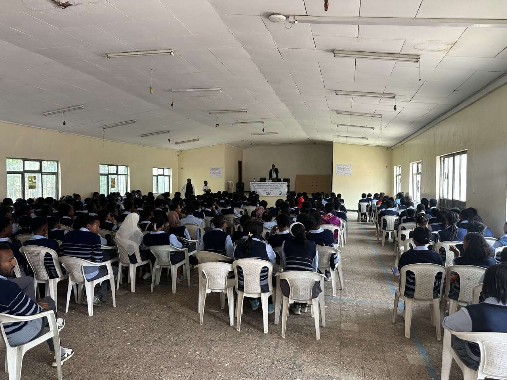

11
Mar
Eneho Fikir Conducts Health Education Session for Tesfaberhan School Students
Eneho Fikir, in collaboration with GIV Society and the
Tesfaberhan School Administration, conducted a health
education awareness session for Grade 12 students. The
program was organized with the aim of promoting students’
awareness about important health issues that affect their
well-being and academic performance.
The session was held on March 11, 2026, and was attended
by more than 200 Grade 12 students. During the program,
professionals delivered educational presentations on
several important topics including mental wellness,
non-communicable diseases, HIV, and sexually transmitted
infections (STIs).
The awareness session was highly informative and served as
an eye-opening experience for many students. It helped
them better understand the importance of taking
precautionary measures and adopting preventive practices
to protect their health.
In addition, the program encouraged students to make
responsible lifestyle choices, maintain their health, and
remain focused on their academic goals. Improving
students’ awareness on such health matters can also
contribute to better school attendance and motivate them
to aspire toward higher education.
Eneho Fikir continues to work in partnership with
different organizations and schools to support youth
development through educational and health awareness
initiatives.